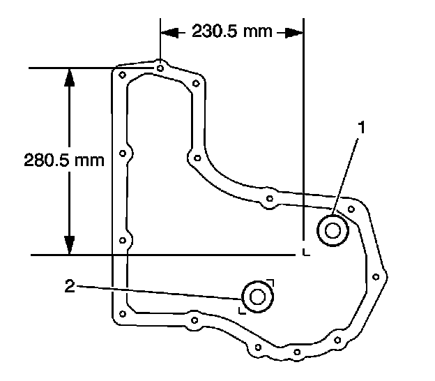
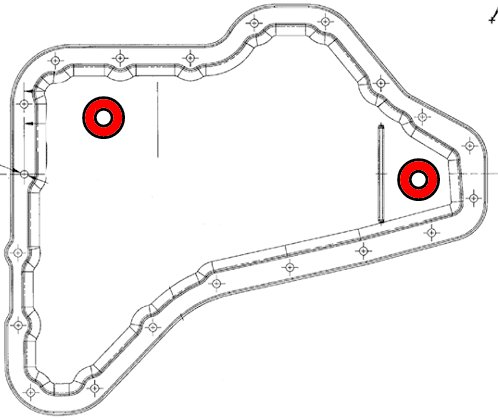
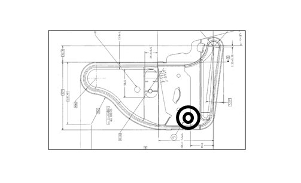
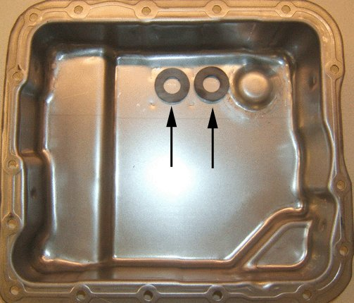
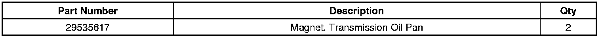
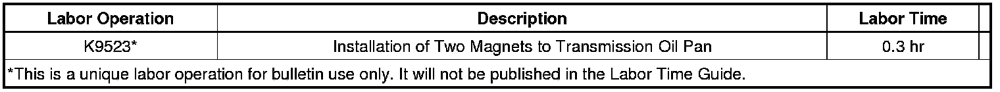

A/T - Normal Maintenance or Warranty on 4T40, 4T45, 4T65, 4L60
INFORMATIONBulletin No.: 08-07-30-040C
Date: July 25, 2012
Subject: Information on Normal Maintenance or Warranty Service for 4T40, 4T45, 4T65, 4L60 Automatic Transmission Oil Pan Magnet Upgrade
Models:
2002-2011 GM Passenger Cars and Light Duty Trucks
Equipped With the Following Transmissions:
4T40-E or 4T45 HYDRA-MATIC(R) Automatic Transmission (RPOs MN4, MN5, ME7)
4T65 Transmission (RPO M15 and MN7)
4L60 Transmission and Derivatives (RPO M30 is 4L60, M32 is 4L65, M70 is 4L70)
Attention:
Do not remove the transmission oil pan unless normal maintenance or diagnosis of a customer concern requires it.
Supercede:
This bulletin is being revised to add 2010/2011 model years. Please discard Corporate Bulletin Number 08-07-30-040B (Section 07 - Transmission/Transaxle).
A new transmission oil pan magnet, P/N 29535617, was released for service. The current square transmission oil pan magnet may become saturated with normal ferrous sediment and the Pressure Control Solenoid (PCS) is now collecting ferrous sediment, making it vary from design. For a given current the PCS electromagnet is stronger, causing the line pressure to be less than needed.
When checking PCS line pressure (refer to Line Pressure Check in SI) and it shows that the line pressure is lower than required (refer to Current-Amps/Line Pressure Chart in SI), for a given current at the PCS or the transmission oil pan was removed (for either normal maintenance or warranty service), only then should the transmission oil pan magnet be upgraded.
1. Remove and discard the original square transmission oil pan magnet and install a new one in the current location (See graphics below for the correct application).
2. Install the second new transmission oil pan magnet in the following location as shown in the illustration.
4T40 & 4T45

4T65E

Note
Only on 4T65E, the second magnet (left) should be attached to the transmission filter.

If the magnet is attached in any other location, it may cause interference (refer to graphic above).
4L60

Parts Information

Warranty Information

For vehicles repaired under warranty, use the table above.

Disclaimer